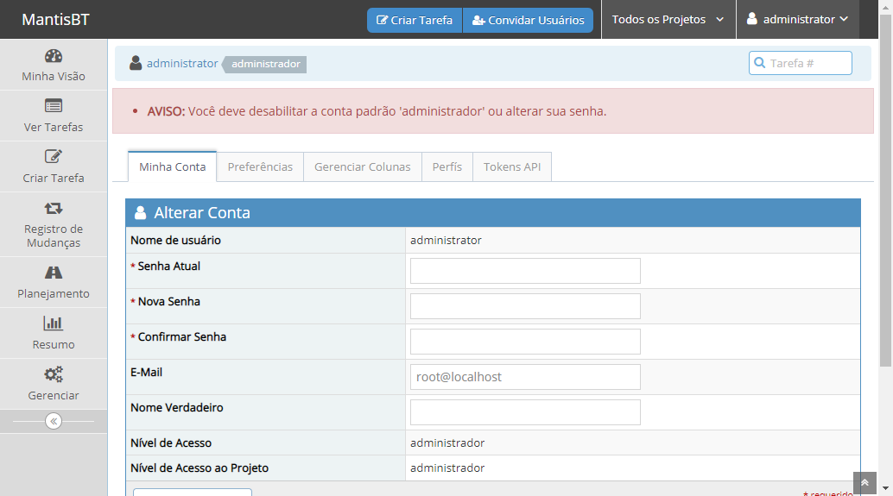

-
Criação de projetos
00:24:02 / 00:02:59:436 Fail
Criação de projetos
05.16.2022 00:24:02 05.16.2022 00:27:01 00:02:59:436 · #test-id=1Como usuário admin Eu quero acessar a seção de criação de projeto Para criar um projetoPassCriar um projeto com sucessoDado que o usuario esteja na pagina de login do MantisE que o usuario tenha feito o login com sucessoQuando acessar a tela de criacao de projetoE preencher o nome do projetoE preencher o estado do projetoE marcar a opcao herdar categorias globaisE selecionar a visibilidade do projetoE preencher a descricao do projeto "Projeto criado como teste"E clicar no botao de salvar projetoEntão o sistema deve efetuar o cadastro com sucessoPassCriar um projeto sem preencher o nome do projetoDado que o usuario esteja na pagina de login do MantisE que o usuario tenha feito o login com sucessoQuando acessar a tela de criacao de projetoE clicar no botao de salvar projetoEntão o sistema deve permanecer na mesma tela de cadastroPassCriar um projeto com nome repetidoDado que o usuario esteja na pagina de login do MantisE que o usuario tenha feito o login com sucessoE que tenha cadastrado um projetoQuando acessar a tela de criacao de projetoE preencher o nome do projetoE preencher o estado do projetoE marcar a opcao herdar categorias globaisE selecionar a visibilidade do projetoE preencher a descricao do projeto "Projeto criado como teste"E clicar no botao de salvar projetoEntão o sistema deve emitir uma mensagem de erroPassCriar projeto com caractere especial no campo nomeDado que o usuario esteja na pagina de login do MantisE que o usuario tenha feito o login com sucessoQuando acessar a tela de criacao de projetoE preencher o nome do projeto com caractere especialE preencher o estado do projetoE marcar a opcao herdar categorias globaisE selecionar a visibilidade do projetoE preencher a descricao do projeto "Projeto criado como teste"E clicar no botao de salvar projetoEntão o sistema deve efetuar o cadastro do caractere especial com sucessoPassCriar projeto com número no campo nomeDado que o usuario esteja na pagina de login do MantisE que o usuario tenha feito o login com sucessoQuando acessar a tela de criacao de projetoE preencher o nome do projeto com numeroE preencher o estado do projetoE marcar a opcao herdar categorias globaisE selecionar a visibilidade do projetoE preencher a descricao do projeto "Projeto criado como teste"E clicar no botao de salvar projetoEntão o sistema deve efetuar o cadastro do numero com sucessoFailEditar campo nome projeto com sucessoDado que o usuario esteja na pagina de login do MantisE que o usuario tenha feito o login com sucessoQuando acessar a tela de gerencia de projetoE clicar no projeto desejado "Teste projeto SQL 01"E definir o nome do projeto "Teste projeto SQL 01_Editado"E clicar no botao de salvar projetoEntão o sistema deve efetuar o cadastro editado com sucessosteps.projeto.ProjetoStep.tirarScreenshot(io.cucumber.java.Scenario)imagePassEditar campo estado do projeto com sucessoPassEditar campo estado do projeto com sucessoDado que o usuario esteja na pagina de login do MantisE que o usuario tenha feito o login com sucessoQuando acessar a tela de gerencia de projetoE clicar no projeto desejado "Teste projeto SQL 02"E definir o estado do projeto desenvolvimentoE clicar no botao de salvar projetoEntão o sistema deve efetuar o cadastro do desenvolvimento editado com sucessoPassEditar campo estado do projeto com sucessoDado que o usuario esteja na pagina de login do MantisE que o usuario tenha feito o login com sucessoQuando acessar a tela de gerencia de projetoE clicar no projeto desejado "Teste projeto SQL 02"E definir o estado do projeto releaseE clicar no botao de salvar projetoEntão o sistema deve efetuar o cadastro do release editado com sucessoPassEditar campo estado do projeto com sucessoDado que o usuario esteja na pagina de login do MantisE que o usuario tenha feito o login com sucessoQuando acessar a tela de gerencia de projetoE clicar no projeto desejado "Teste projeto SQL 02"E definir o estado do projeto obsoletoE clicar no botao de salvar projetoEntão o sistema deve efetuar o cadastro do obsoleto editado com sucessoPassEditar campo habilitado do projeto com sucessoDado que o usuario esteja na pagina de login do MantisE que o usuario tenha feito o login com sucessoQuando acessar a tela de gerencia de projetoE clicar no projeto desejado "Teste projeto SQL 03"E clicar no campo habilitadoE clicar no botao de salvar projetoEntão o sistema deve efetuar a alteracao do habilitado com sucessoPassEditar campo visibilidade do projeto com sucessoDado que o usuario esteja na pagina de login do MantisE que o usuario tenha feito o login com sucessoQuando acessar a tela de gerencia de projetoE clicar no projeto desejado "Teste projeto SQL 04"E definir a visibilidade do projeto "privado"E clicar no botao de salvar projetoEntão o sistema deve efetuar a alteracao da visibilidade com sucessoPassEditar campo descrição do projeto com sucessoDado que o usuario esteja na pagina de login do MantisE que o usuario tenha feito o login com sucessoQuando acessar a tela de gerencia de projetoE clicar no projeto desejado "Teste projeto SQL 05"E definir a descricao do projeto "Projeto criado e alterado com sucesso"E clicar no botao de salvar projetoEntão o sistema deve efetuar a alteracao da descricao com sucessoPassEditar campo nome com parâmetro vazioDado que o usuario esteja na pagina de login do MantisE que o usuario tenha feito o login com sucessoQuando acessar a tela de gerencia de projetoE clicar no projeto desejado "Teste projeto SQL 01"E definir o nome do projeto ""E clicar no botao de salvar projetoEntão o sistema deve permanecer na mesma tela de cadastroPassExcluir projeto com sucessoDado que o usuario esteja na pagina de login do MantisE que o usuario tenha feito o login com sucessoQuando acessar a tela de gerencia de projetoE clicar no projeto desejado "Teste projeto SQL 06"E clicar no botao apagar projetoEntão o sistema deve excluir com sucesso
-
org.openqa.selenium.TimeoutException
1 tests
org.openqa.selenium.TimeoutException
1 failedStatus Timestamp TestName Fail 00:25:05 AM Então o sistema deve efetuar o cadastro editado com sucesso Criação de projetos.Editar campo nome projeto com sucesso.Então o sistema deve efetuar o cadastro editado com sucesso
Started
mai 16, 2022 00:24:01
Ended
mai 16, 2022 00:27:01
Features Passed
0
Features Failed
1
Features
Scenarios
Steps
Timeline